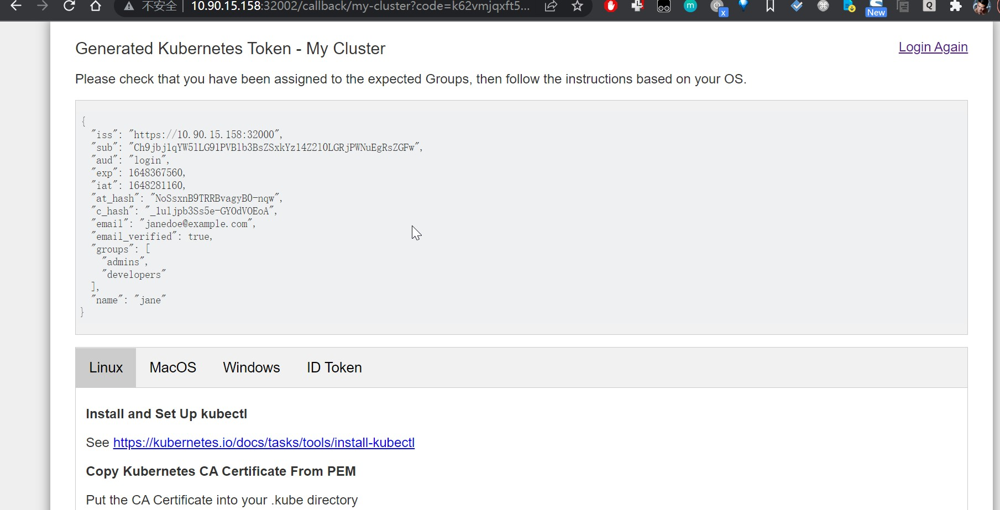

APISERVER 和 LDAP 集成进行权限控制
在 Kubernetes 中，APIServer是整个集群的中枢神经，它不仅连接了各个模块，更是为整个集群提供了访问控制能力。为了方便进行用户的统一管理和鉴权，Kubernetes 的 SSO 单点登录，企业推荐的认证集成方式是通过 OIDC对接企业已有的统一身份认证系统。但是企业的认证系统可能并不支持 OIDC 认证协议，企业大多数认证系统都是基于 LDAP协议的，那么就需要我们开发相应的 Webhook。
但 CoreOS 开源的身份认证服务项目 Dex很好地解决了这个问题。Dex是一种身份服务，它使用 OIDC 来驱动其他应用程序的身份验证。Dex通过“connectors.”充当其他身份提供商的门户。这使得 dex 可以将身份验证延迟(找不到很好的词来形容，只能硬翻了)到 LDAP 服务器、SAML 提供程序或已建立的身份提供程序（如GitHub，Google和Active Directory）。下面列出了支持的验证方式，包括 LDAP , Gitlab 等等。
部署
- 下面图展示了基于
github的认证流程，我们这里会集成OpenLDAP来替换Github。同时会用dex-k8s-authenticator来作为交互的web。当然web的选择很多，比如kubelogin,loginapp等等，大同小异。 dex-k8s-authenticator是一个web-app，它可以与Dex进行交互并获取Dex生成的token创建和修改kubeconfig文件的命令。用户执行这些生成的命令后可以完成kubeconfig文件配置。
部署 OpenLDAP
我们将
OpenLDAP部署在k8s当中，用phpLDAPAdmin来作为管理的界面，仅为了展示，并未采用SSL，生产当中建议使用SSL。1
2
3
4
5
6
7
8
9
10
11
12
13
14
15
16
17
18
19
20
21
22
23
24
25
26
27
28
29
30
31
32
33
34
35
36
37
38
39
40
41
42
43
44
45
46
47
48
49
50
51
52
53
54
55
56
57
58
59
60
61
62
63
64
65
66
67
68
69
70
71
72
73
74
75
76
77
78
79
80
81
82
83
84
85
86
87
88
89
90
91
92
93
94
95
96
97
98
99
100
101
102
103
104
105
106
107
108
109
110
111
112
113
114
115
116
117
118
119
120
121
122
123
124
125
126
127
128
129
130
131
132
133
134
135
136
137
138
139
140
141
142
143
144
145
146
147
148
149
150
151
152
153
154
155
156
157
158
159
160
161
162
163
164
165
166
167
168
169
170
171
172
173
174
175
176
177
178
179
180
181
182
183
184
185
186
187
188
189
190
191
192
193
194
195
196
197
198
199
200
201
202
203
204
205
206
207
208
209
210
211
212
213
214
215
216
## ldap deploy
kind: Deployment
apiVersion: apps/v1
metadata:
name: ldap-server
namespace: dex
labels:
app: ldap-server
annotations:
kubesphere.io/alias-name: LDAP
spec:
replicas: 1
selector:
matchLabels:
app: ldap-server
template:
metadata:
labels:
app: ldap-server
spec:
volumes:
- name: volume-conf
persistentVolumeClaim:
claimName: ldap-config-pvc
- name: volume-data
persistentVolumeClaim:
claimName: ldap-data-pvc
containers:
- name: openldap
image: osixia/openldap:1.5.0
ports:
- name: tcp-389
containerPort: 389
protocol: TCP
- name: tcp-636
containerPort: 636
protocol: TCP
env:
- name: LDAP_ORGANISATION
value: xgit
- name: LDAP_DOMAIN
value: xgit.cn
- name: LDAP_ADMIN_PASSWORD
value: "123456"
- name: LDAP_CONFIG_PASSWORD
value: "123456"
- name: LDAP_BACKEND
value: mdb
resources:
limits:
cpu: 500m
memory: 500Mi
requests:
cpu: 100m
memory: 100Mi
volumeMounts:
- name: volume-conf
mountPath: /etc/ldap/slapd.d
- name: volume-data
mountPath: /var/lib/ldap
terminationMessagePath: /dev/termination-log
terminationMessagePolicy: File
imagePullPolicy: IfNotPresent
restartPolicy: Always
terminationGracePeriodSeconds: 30
dnsPolicy: ClusterFirst
schedulerName: default-scheduler
strategy:
type: RollingUpdate
rollingUpdate:
maxUnavailable: 25%
maxSurge: 25%
revisionHistoryLimit: 10
progressDeadlineSeconds: 600
## ldap tool
kind: Deployment
apiVersion: apps/v1
metadata:
name: ldap-phpldapadmin
namespace: dex
labels:
app: ldap-phpldapadmin
annotations:
kubesphere.io/alias-name: LDAP
spec:
replicas: 1
selector:
matchLabels:
app: ldap-phpldapadmin
template:
metadata:
labels:
app: ldap-phpldapadmin
spec:
containers:
- name: ldapadmin
image: osixia/phpldapadmin:stable
ports:
- name: tcp-443
containerPort: 443
protocol: TCP
- name: tcp-80
containerPort: 80
protocol: TCP
env:
- name: PHPLDAPADMIN_HTTPS
value: 'false'
- name: PHPLDAPADMIN_LDAP_HOSTS
value: ldap-server-svc
resources:
limits:
cpu: 500m
memory: 500Mi
requests:
cpu: 10m
memory: 10Mi
terminationMessagePath: /dev/termination-log
terminationMessagePolicy: File
imagePullPolicy: IfNotPresent
securityContext:
privileged: true
restartPolicy: Always
terminationGracePeriodSeconds: 30
dnsPolicy: ClusterFirst
securityContext: {}
affinity: {}
schedulerName: default-scheduler
strategy:
type: RollingUpdate
rollingUpdate:
maxUnavailable: 25%
maxSurge: 25%
revisionHistoryLimit: 10
progressDeadlineSeconds: 600
## svc
kind: Service
apiVersion: v1
metadata:
name: ldap-server-svc
namespace: dex
labels:
app: ldap-server-svc
spec:
ports:
- name: tcp-ladp
protocol: TCP
port: 389
targetPort: 389
nodePort: 30944
- name: tcp-ldap-ssl
protocol: TCP
port: 636
targetPort: 636
nodePort: 31282
selector:
app: ldap-server
type: NodePort
sessionAffinity: ClientIP
externalTrafficPolicy: Cluster
## svc
kind: Service
apiVersion: v1
metadata:
name: ldap-phpldapadmin-svc
namespace: dex
labels:
app: ldap-phpldapadmin-svc
spec:
ports:
- name: tcp-ldapadmin
protocol: TCP
port: 80
targetPort: 80
nodePort: 30581
selector:
app: ldap-phpldapadmin
type: NodePort
sessionAffinity: ClientIP
externalTrafficPolicy: Cluster
## pvc
kind: PersistentVolumeClaim
apiVersion: v1
metadata:
name: ldap-data-pvc
namespace: dex
labels:
app: ldap-data-pvc
spec:
accessModes:
- ReadWriteOnce
resources:
requests:
storage: 2Gi
storageClassName: prometheus
## pvc
kind: PersistentVolumeClaim
apiVersion: v1
metadata:
name: ldap-config-pvc
namespace: dex
labels:
app: ldap-config-pvc
spec:
accessModes:
- ReadWriteOnce
resources:
requests:
storage: 1Gi
storageClassName: prometheus
部署完成之后导入用户组和用户：
1
2
3
4
5
6
7
8
9
10
11
12
13
14
15
16
17
18
19
20
21
22
23
24
25
26
27
28
29
30
31
32
33
34
35
36
37
38
39
40
41
42
43
44
45
46
47
48
49
50
51
52
53
54
55
56
57
58
59
60
61
62
63
64
65LDIF Export for dc=xgit,dc=cn
Server: ldap-server-svc (ldap-server-svc)
Search Scope: sub
Search Filter: (objectClass=*)
Total Entries: 7
Generated by phpLDAPadmin (http://phpldapadmin.sourceforge.net) on March 26, 2022 7:09 am
Version: 1.2.5
version: 1
Entry 1: dc=xgit,dc=cn
dn: dc=xgit,dc=cn
dc: xgit
o: xgit
objectclass: top
objectclass: dcObject
objectclass: organization
Entry 2: ou=Groups,dc=xgit,dc=cn
dn: ou=Groups,dc=xgit,dc=cn
objectclass: organizationalUnit
objectclass: top
ou: Groups
Entry 3: cn=admins,ou=Groups,dc=xgit,dc=cn
dn: cn=admins,ou=Groups,dc=xgit,dc=cn
cn: admins
member: cn=john,ou=People,dc=xgit,dc=cn
member: cn=jane,ou=People,dc=xgit,dc=cn
objectclass: groupOfNames
objectclass: top
Entry 4: cn=developers,ou=Groups,dc=xgit,dc=cn
dn: cn=developers,ou=Groups,dc=xgit,dc=cn
cn: developers
member: cn=jane,ou=People,dc=xgit,dc=cn
objectclass: groupOfNames
objectclass: top
Entry 5: ou=People,dc=xgit,dc=cn
dn: ou=People,dc=xgit,dc=cn
objectclass: organizationalUnit
objectclass: top
ou: People
Entry 6: cn=jane,ou=People,dc=xgit,dc=cn
dn: cn=jane,ou=People,dc=xgit,dc=cn
cn: jane
mail: janedoe@example.com
objectclass: person
objectclass: inetOrgPerson
objectclass: top
sn: doe
userpassword: foo
Entry 7: cn=john,ou=People,dc=xgit,dc=cn
dn: cn=john,ou=People,dc=xgit,dc=cn
cn: john
mail: johndoe@example.com
objectclass: person
objectclass: inetOrgPerson
objectclass: top
sn: doe
userpassword: bar最终会有两个组和两个用户：
部署dex
dex的部署参考官方仓库的helm包或者示例部署文件，本文仅为演示，我们利用自带的脚本生成一个自签证书。注意alt_names，我们添加了一个最终访问的IP地址。1
2
3
4
5
6
7
8
9
10
11
12
13
14
15
16
17
18
19
20
21
22
23
24!/bin/bash
mkdir -p ssl
cat << EOF > ssl/req.cnf
[req]
req_extensions = v3_req
distinguished_name = req_distinguished_name
[req_distinguished_name]
[ v3_req ]
basicConstraints = CA:FALSE
keyUsage = nonRepudiation, digitalSignature, keyEncipherment
subjectAltName = @alt_names
[alt_names]
DNS.1 = dex.example.com
IP.1 = 10.90.15.158
EOF
openssl genrsa -out ssl/ca-key.pem 2048
openssl req -x509 -new -nodes -key ssl/ca-key.pem -days 10 -out ssl/ca.pem -subj "/CN=kube-ca"
openssl genrsa -out ssl/key.pem 2048
openssl req -new -key ssl/key.pem -out ssl/csr.pem -subj "/CN=kube-ca" -config ssl/req.cnf
openssl x509 -req -in ssl/csr.pem -CA ssl/ca.pem -CAkey ssl/ca-key.pem -CAcreateserial -out ssl/cert.pem -days 10 -extensions v3_req -extfile ssl/req.cnf后续按部就班的部署，由于是自签证书，我们需要将
ca证书和自签生成的证书密钥导入到pod当中。下面是配置文件，需要注意几点。指定证书的目录。
LDAP的信息。staticClients中的信息是我们后续部署是dex-k8s-authenticator的相关信息。
1
2
3
4
5
6
7
8
9
10
11
12
13
14
15
16
17
18
19
20
21
22
23
24
25
26
27
28
29
30
31
32
33
34
35
36
37
38
39
40
41
42
43
44
45
46
47
48
49
50
51
52
53
54
55
56
57
kind: ConfigMap
apiVersion: v1
metadata:
name: dex
namespace: dex
data:
config.yaml: |
issuer: https://xxxx
storage:
type: kubernetes
config:
inCluster: true
web:
https: 0.0.0.0:5556
tlsCert: /etc/dex/tls/tls.crt
tlsKey: /etc/dex/tls/tls.key
connectors:
- type: ldap
id: ldap
name: OpenLDAP
config:
host: ldap-server-svc:389
insecureNoSSL: true
insecureSkipVerify: true
bindDN: cn=admin,dc=xgit,dc=cn
bindPW: "123456"
usernamePrompt: Email Address
userSearch:
baseDN: ou=People,dc=xgit,dc=cn
filter: "(objectClass=person)"
username: mail
idAttr: DN
emailAttr: mail
nameAttr: cn
groupSearch:
baseDN: ou=Groups,dc=xgit,dc=cn
filter: "(objectClass=groupOfNames)"
userMatchers:
- userAttr: DN
groupAttr: member
nameAttr: cn
oauth2:
skipApprovalScreen: true
staticClients:
- id: login
redirectURIs:
- 'http://xxxx/callback/my-cluster'
name: 'Login App'
secret: xxxxx
enablePasswordDB: true
staticPasswords:
- email: "admin@example.com"
# bcrypt hash of the string "password": $(echo password | htpasswd -BinC 10 admin | cut -d: -f2)
hash: "xxxx"
username: "admin"
userID: "08a8684b-db88-4b73-90a9-3cd1661f5466"
dex-k8s-authenticator 部署
dex-k8s-authenticator的部署也很简单，根据官方的helm chart包来部署。演示所以采用的是http，再强调一遍，生产建议使用SSL。下面是配置文件中需要注意的部分：- 需要指定
k8s集群的ca，即k8s_ca_pem; - 由于
dex使用的是自签证书，因此将dex证书 的ca添加到RootCA，即trusted_root_ca；
1
2
3
4
5
6
7
8
9
10
11
12
13
14
15
16
17
18
19
20
21
22
23
24
25
26
27
28
29
30
31
32
# Source: dex-k8s-authenticator/templates/configmap.yaml
apiVersion: v1
kind: ConfigMap
metadata:
name: release-name-dex-k8s-authenticator
labels:
app: release-name-dex-k8s-authenticator
env: dev
chart: "dex-k8s-authenticator-1.4.0"
release: "release-name"
heritage: "Tiller"
data:
config.yaml: |-
listen: http://0.0.0.0:5555
web_path_prefix: /
debug: false
clusters:
- client_id: login
client_secret: 4TORGiNV9M54BTk1v7dNuFSaI6hUjfjr
description: Example Cluster Long Description...
issuer: https://xxxx:32000
k8s_ca_pem: |-
-----BEGIN CERTIFICATE-----
-----END CERTIFICATE-----
k8s_master_uri: https://xxxx:6443
name: my-cluster
redirect_uri: http://xxxx:32002/callback/my-cluster
short_description: My Cluster
trusted_root_ca: |-
-----BEGIN CERTIFICATE-----
-----END CERTIFICATE------ 需要指定
部署完成：
验证
dex：
设置 APIServer
开启
kube-apiserver的ODIC选项，将dex的ca移动到集群证书的目录：1
2
3
4
5--oidc-issuer-url=https://xxxx:32000
--oidc-client-id=loginapp
--oidc-ca-file=/etc/kubernetes/ssl/dex-ca.pem
--oidc-username-claim=email
--oidc-groups-claim=groups
创建相应的 RBAC 权限
我们在
argocd这个ns为developers创建role和rolebinding，这个developers对应LDAP里面的Group：·1
2
3
4
5
6
7
8
9
10
11
12
13
14
15
16
17
18
19
20
21
22
23kind: Role
apiVersion: rbac.authorization.k8s.io/v1
metadata:
name: ldap-test
namespace: argocd
rules:
- apiGroups: [""]
resources: ["pods"]
verbs: ["get", "watch", "list"]
kind: RoleBinding
apiVersion: rbac.authorization.k8s.io/v1
metadata:
name: ldap-test
namespace: argocd
subjects:
- kind: Group
name: developers
apiGroup: ""
roleRef:
kind: Role
name: ldap-test
apiGroup: ""
使用
使用很简单，我们打开
web-app并用LDAP账号去登录，通过之后按照界面的提示去配置kuebctl的配置文件：
之后我们使用配置文件进行验证，如下面，权限已经生效，同时
token在一定时间会过期：后续考虑将
arog-cd与dex集成。